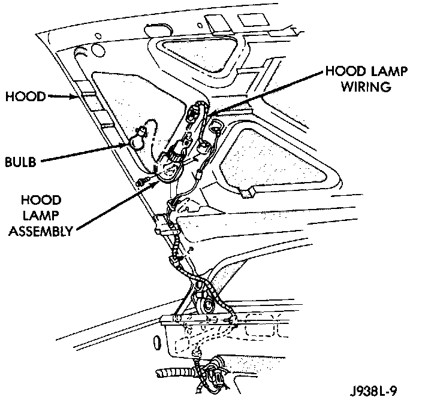

Underhood Lamp: Service and Repair
REMOVALWhen equipped, the underhood lamp is installed on the hood right, rear panel. The lamp is on when hood is opened by way of liquid ON/OFF switch that is integral with lamp base.
1. Open hood.
Underhood Lamp:

2. Remove screw attaching lamp support bracket to hood.
3. Disengage connector for underhood lamp.
4. Separate lamp from vehicle.
INSTALLATION
1. Engage connector for underhood lamp.
2. Position lamp on hood and install screw.